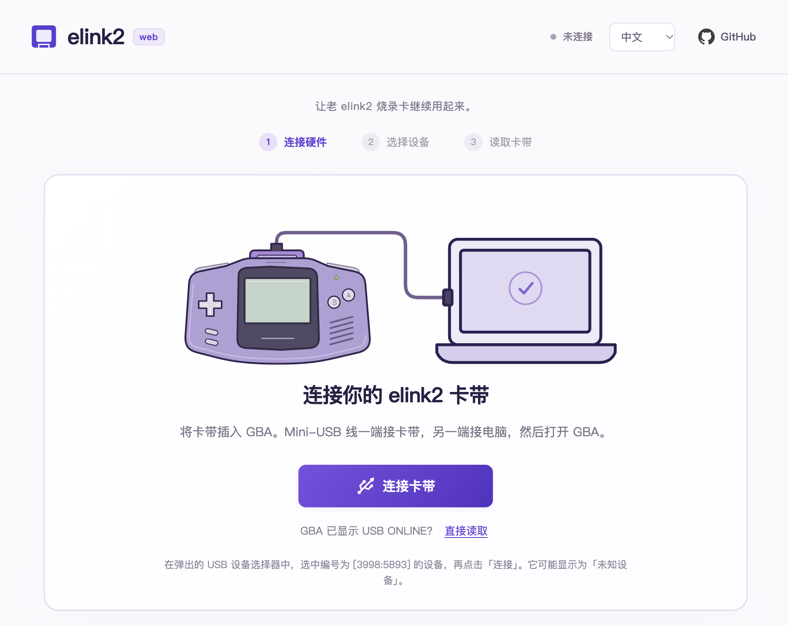
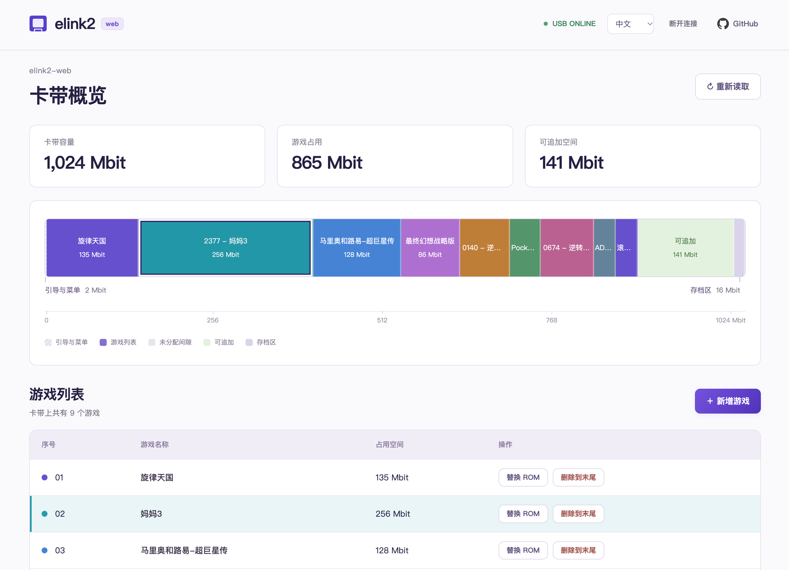
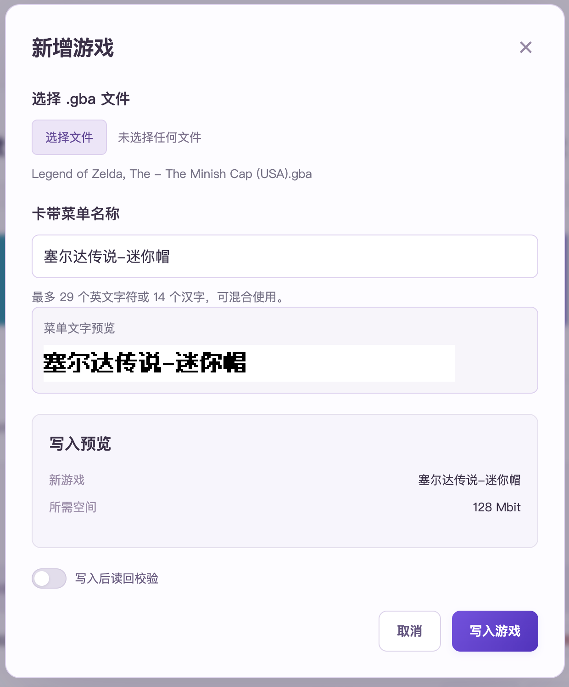

最近，我翻出了自己的 Game Boy Micro（GBM），还有当年配着它一起用的 elink2 烧录卡，想重温一下以前的游戏。
这张卡是我在 2010 年花 100 元买的。十几年过去，机器和卡都还在，但想往里面换几个游戏，却先碰到了电脑上的问题：原来的配套软件是 Windows 程序，我现在主要用 macOS，又找不到可用的驱动。
于是，我让 Codex 帮忙分析原版程序，尝试重新做一个能在 Mac 上使用的工具。折腾下来，最后做成了一个网页项目：elink2-web。

为什么还要折腾这张老卡
纯纯是情怀。
elink2 是一款 GBA 烧录卡，大概是 2009 年左右的产品。用户可以把游戏写进卡带，再插到 GBA 上运行。和后面出现的把文件复制到存储卡里的烧录卡不同，它需要通过 USB 和配套程序完成烧录。
现在，这款卡早已停产，网上能找到的资料和讨论都不多。现在基本只能在二手市场上见到它。对还留着这张卡的人来说，卡带本身也许还能工作，但配套软件已经成了继续使用它的门槛。
我想解决的就是眼前这个问题：让手上这张老卡在现在的电脑上继续用起来，能看看里面装了什么，也能换几个游戏。
这也是一个挺适合试试 AI 能力的题目。普通的网页、接口项目，通常有文档和成熟的库可以参考；这次面对的却是一张老 USB 设备，手上主要是原版 Windows 软件和网上零星的软件截图。Codex 能不能从这些材料里帮我理出一条路，我也很好奇。
从原版程序到实机验证
最开始做的是一个 macOS 原型。Codex 一开始也建议我找台 Windows 机器，运行原版软件，抓一下 USB 通信的包，看看它到底往卡带里发了什么。但我一口咬定：手上只有 Mac，也不想装虚拟机。于是 Codex 只好硬啃原版 Windows 程序，从里面研究初始化、USB 通信和游戏菜单的细节，再拿我的卡带逐步验证。
我在其中的作用，一方面是回忆当年使用原版软件时的操作流程，给 Codex 提供线索；另一方面，就是在它需要实机验证的时候，配合插拔 USB 线、给 GBA 开关机，再把屏幕上看到的状态反馈给它。
整个过程从连接和读取开始。先让 GBA 屏幕显示出 USB ONLINE，再读取菜单、解析游戏列表，之后才尝试写入和替换游戏。每次写完，除了读回数据进行比对，还要检查相邻区域和存档有没有受到影响，最后拔掉 USB、重新开机，确认菜单显示正常、游戏确实能启动。
这样一点点下来，原型在我这张卡上跑通了末项游戏的写入、菜单项隐藏与恢复，以及指定空间内的游戏替换。过程中也保留了分析记录和操作日志，方便遇到问题时回头查证。
为什么做成网页工具
macOS 原型跑通之后，我又突发奇想：Chrome 不是支持 WebUSB 么，这些功能是不是直接用浏览器就能实现？这样连桌面工具都不用装了。
于是，我又让 Codex 在原型的基础上，把连接、读取和游戏管理流程搬进浏览器，就有了现在的 elink2-web。
网页的好处很直接：对于支持 WebUSB 的浏览器，打开页面、授权连接设备，就可以开始操作，不用再为这个小工具安装一个桌面应用。游戏文件的处理和 USB 通信都在浏览器本地完成，烧录过程不需要把 ROM 上传到服务器。
当然，网页也有浏览器兼容性的限制。目前支持范围是桌面版 Chrome 和 Edge，实际测试用的是 Chrome，已经在 Apple Silicon 和 Intel 的 MacBook Pro 上跑通过。Edge 和其他系统下的表现，还需要继续验证。

界面上，我主要想把卡带里原本不太直观的状态展示出来：有哪些游戏、各自占了多少空间、空隙在哪里、末尾还能追加多少。选择游戏文件后，也可以预览写入范围和卡带菜单名称。

菜单名称是另一个有意思的小细节。卡带菜单里的文字需要转换成点阵字模，不能直接把网页上的文字样式带过去。现在工具使用固定的像素字体生成字模，可以自定义中文或英文名称，网页预览和实际写入使用同一份位图数据。

这一圈折腾下来，感觉我和 Codex 就是在来回配合：它分析程序、写代码，我拿着 GBA 按它说的试，再告诉它哪里有反应、哪里没动静。毕竟是在和一张老卡打交道，电脑上显示成功了还不算，拔掉线、重新开机，游戏真能跑起来，心里才踏实。
目前做到了哪一步
截至 2026 年 11 月 9 日，elink2-web 已经实现了这些功能：
- 连接卡带并读取游戏列表。
- 展示卡带存储分布、已用空间和可追加空间。
- 新增游戏，以及在原有空间内替换游戏。
- 删除选中的游戏及其后的全部游戏。
- 自定义卡带菜单名称，并预览字模效果。
- 中英文界面、操作日志，以及可选的写入后读回校验。
存档导入导出和金手指还没有接到网页里；更多卡带、固件以及游戏存档兼容性，也需要后续验证。前期原型的实机结果主要来自我手上这一张卡。
访问地址与源码
在线体验地址：elink2.knktc.com。
项目源码：knktc/elink2-web。
站点通过 Cloudflare 自动构建和托管，省去了自己维护服务器和部署流程的麻烦。感谢 Cloudflare 大善人。
如果你也还留着 elink2 烧录卡，可以试试看。遇到问题时，可以在 GitHub 提交 issue，附上系统、浏览器、卡带信息和操作日志，帮助我继续完善兼容性。
做这个工具最初只是想往自己的 GBM 里换几个游戏。现在，这张 2010 年买的卡，又能在 Mac 上继续用了。也希望它能帮到同样还留着老卡的人。